세계 어린이들의 아침식사 - 뉴욕타임즈 기사
게시: 2017-07-01T11:32:27+09:00
이 글은 뉴욕 타임즈의 아래 기사 중 일부를 번역하고 사진을 옮긴 옛날 글인데, 주말 오전에 읽기 좋을 것 같아 다시 올립니다.
http://www.nytimes.com/interactive/2014/10/08/magazine/eaters-all-over.html?_r=3
1. 일본 도쿄, 사키
사키가 처음으로 나또를 먹었을 때는 이 여자애가 생후 7개월 되었을 때였는데, 먹자마자 토했다. 엄마인 아사까는 아마 냄새 때문일 거라고 생각한다. 그 냄새는 마치 깡통제 고양이 사료와 비슷하기 때문이다. 하지만 차츰 이 끈적끈적한 발효콩은 사키의 가장 좋아하는 음식이 되었고, 전통적인 일본식 아침식사에 빠지지 않는 일부가 되었다. 다른 메뉴는 흰쌀밥, 미소된장국, 간장과 청주로 요리한 으깬 호박, 오이 장아찌 (사키가 제일 싫어하는 반찬), 계란말이, 그리고 연어구이이다.
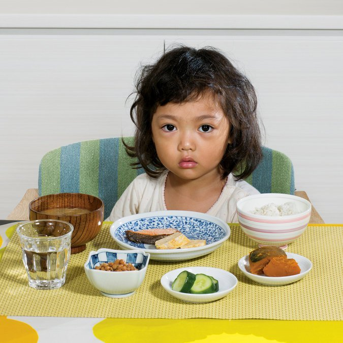
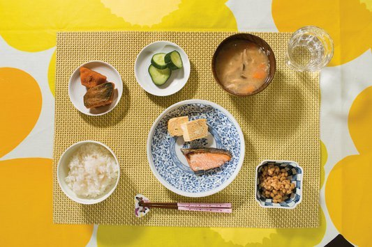
2. 터키 이스탄불, 도가
도가 앞에 펼쳐진 화려한 토요일 아침식사에는 카이막(꿀과 엉긴 크림)을 얹은 토스트, 그린/블랙 올리브, 수쿡이라는 이름의 매운 소시지, 삶은 달걀, 타히니(참깨를 갈은 것)를 얹은 뻑뻑한 포도 시럽 (페크메즈), 양/염소/젖소 우유로 만든 여러가지 종류의 치즈, 모과잼과 블랙베리 잼, 패스트리와 빵, 토마토, 오이, 흰 무와 여러가지 신선 채소, 구운 고추로 만든 페이스트인 kahvaltilik biber salcasi, 그리고 디저트로는 헤이즐넛으로 향을 낸 할바(halvah) 과자가 포함되어 있으며, 우유와 오렌지 쥬스도 있다. 확실히 평일날 아침식사보다는 화려한 편인데, 이 가족은 여러가지를 먹는 터키식 아침식사 전통을 따르고 있다.
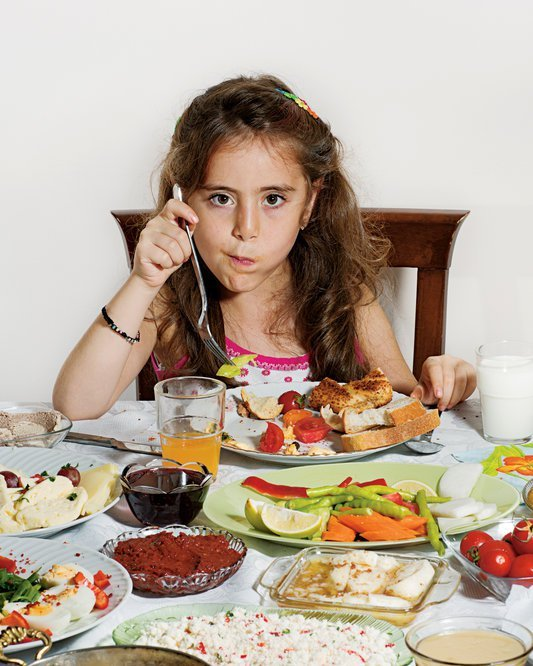
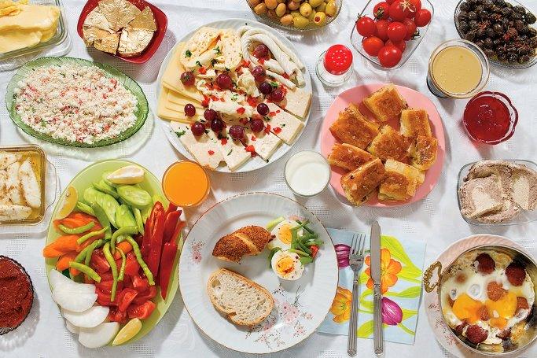
3. 프랑스 파리, 나타나엘
나타나엘이 아빠집에 묵을 때의 평일날 아침식사는 할아버지 할머니가 준비해주는데, 항상 키위 한개, 타르틴 (빵위에 고기나 치즈, 채소를 얹은 것), 바게트에 버터와 잼을 바른 것, 그리고 우유와 시리얼, 갓 짠 오렌지 쥬스이다. 나타나엘은 크레페와 코코아를 더 좋아하고, 많은 프랑스 꼬마애들이 이걸 더 좋아하지만 아빠인 세드릭은 건강을 더 생각하는 편이다. 주말에는 크롸상을 먹고, 빠띠쉐인 할아버지에게 물려받은 열정 그대로, 자기가 만든 디저트를 먹는다.
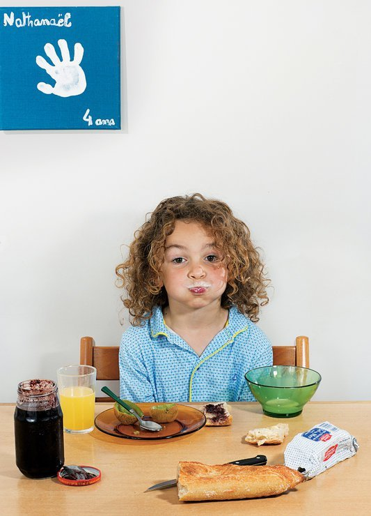
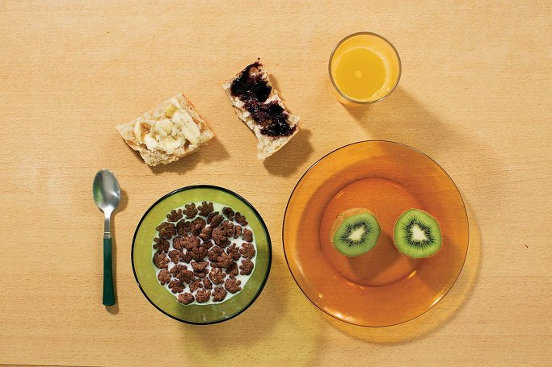
4. 말라위 치텟제, 에밀리
에밀리는 할머니 에텔과 함께 말라위의 수도인 릴롱궤 외곽에 사는데, 할머니가 다른집 파출부를 하기 때문에 이 아홉 식구는 6시 이전에 일어나 아침을 먹는다. 에밀리의 아침식사는 팔라라고 불리는 콩가루와 너트가루를 섞은 밀가루 죽과, 밀가루/양파/양파/고추 반죽 튀김, 그리고 삶은 감자와 호박, 그리고 꽃과 설탕으로 만든 검붉은 색의 쥬스를 마신다. 에밀리는 운이 좋은 편이고, 다른 말라위 어린이들은 영양 실조 상태인 경우가 많다. 가끔은 아침에 에밀리도 설탕을 넣은 홍차를 마신다.
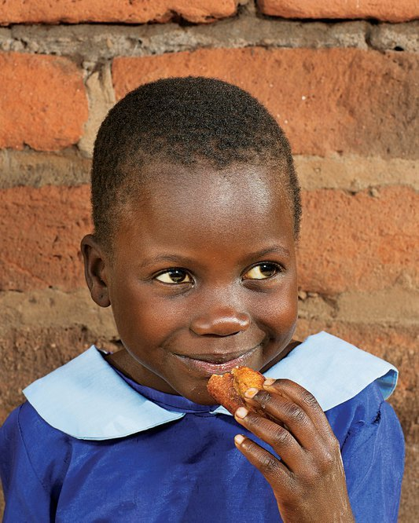
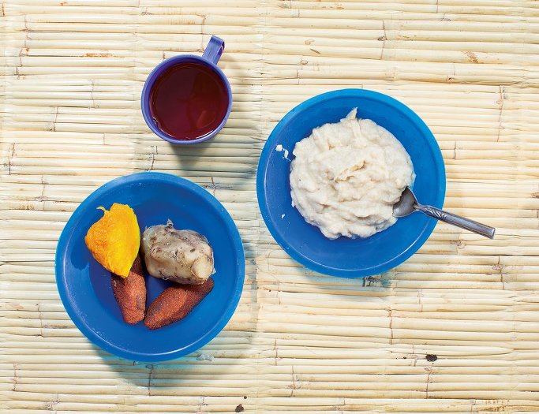
5. 아이슬란드 레이캬비크, 비르타
비르타의 귀리죽은 hafragrautur라고 부르는데, 이것이 아이슬란드의 기본 아침식사이다. 이 귀리죽은 물 또는 우유로 끓이는데, 종종 갈색설탕, 메이플시럽, 버터, 과일, 그리고 신 우유인 surmjolk를 곁들인다. 비르타는 또 lysi라고 부르는, 대구 간 기름을 마신다. 아이슬란드의 긴 겨울에는 햇빛이 부족하여 비타민 D가 부족하기 쉬운데, 이 대구 간 기름에는 비타민 D가 풍부하다. 비르타의 엄마인 스바나는 4명의 아이들에게 생후 6개월부터 이것을 마시게 했는데, 지금은 모두들 불평없이 잘 마신다. 아이슬란드의 많은 어린이집과 유치원에서는 이 lysi를 아침마다 마시게 한다.
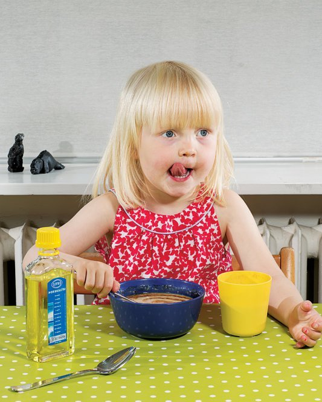
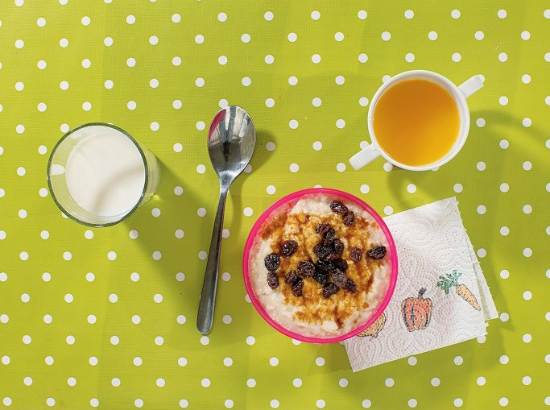
6. 네덜란드 암스테르담, 비브
비브에게 아침식사는 우유와 함께, 버터를 바르고 (가장 중요한) 달콤한 스프링클을 뿌린 빵이다. 이 스프링클은 초콜렛, 바닐라, 과일 등 다양한 맛과 크고 작은 다양한 사이즈로 나온다. 정부가 운영하는 관광 관련 사이트에 따르면 네덜란드에서는 매일 75만 조각의 빵이 hagelslag (싸락눈 폭풍)이라고 불리는 초콜렛 스프링클과 함께 소비된다고 한다. 비브는 특히 vruchtenhagel (과일 싸락눈)이라는 이름의 여러가지 혼합맛 스프링클을 좋아한다.
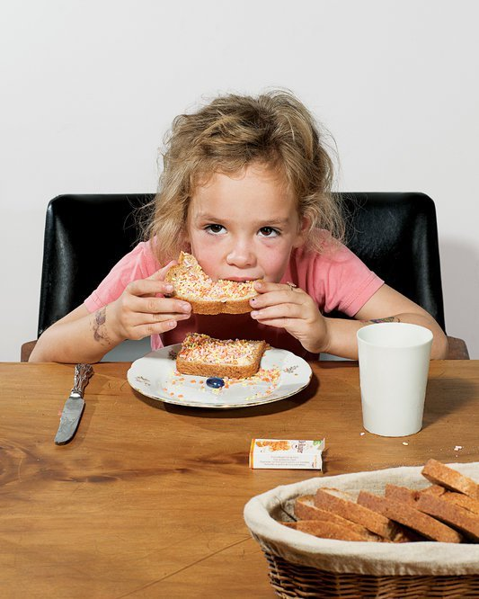
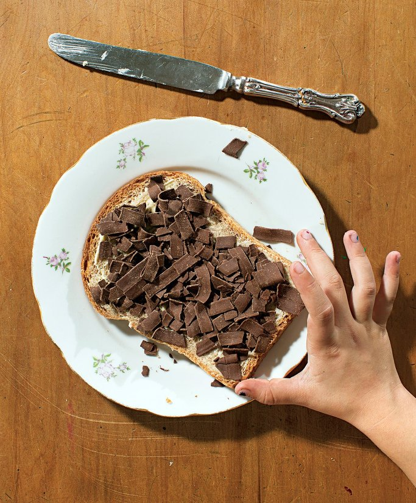
7. 브라질 상 파울루, 아리시아와 하킴
아리시아의 분홍색 컵에는 초콜렛 우유가 담겨 있지만, 동생인 하킴의 컵에는 라떼 커피가 들어있다. 많은 브라질 부모들에게 있어, 아이에게 커피를 주는 것은 문화적 전통이다. 또 많은 사람들이 커피가 비타민과 항산화물질이 풍부하며, 우유와 섞어 아침식사로 주면 아이들이 학교에서 집중하는데 도움을 준다고 믿는다. 아빠인 헤지날도도 하킴이 그걸 마시고 나면 더 들뜨는 것 같긴 하다고 인정하지만, 적당히 마시면 괜찮다 소아과 의사도 말했다고 한다. 아이들은 빵과 버터와 함께 햄과 치즈도 먹는다.
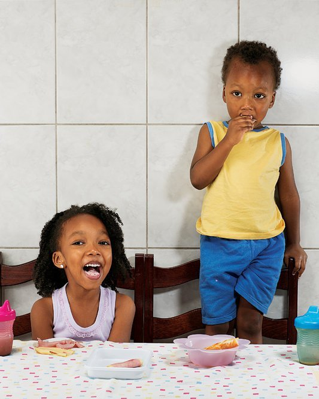
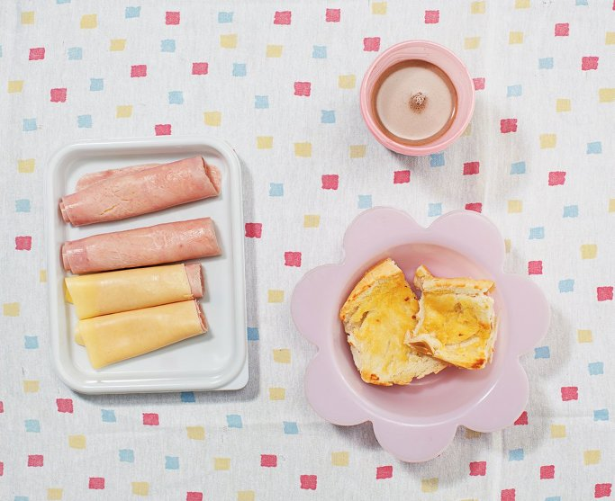
8. 말라위 치텟제, 필립과 셀린
필립과 그의 쌍동이 여동생인 셀린은 chikondamoyo라는 달콤한 옥수수빵 비슷한 케익으로 아침을 시작한다. 이건 할머니인 도로시가 알루미늄 냄비로 만든 것이다. 이 쌍동이는 아침식사로 그것과 함께 삶은 감자와 설탕을 넣은 홍차도 든다.
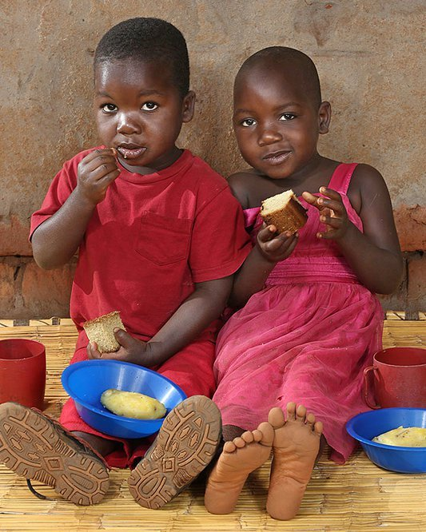
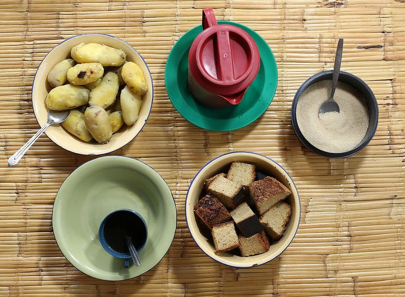
9. 일본 토쿄, 코끼
코끼에게 선택권이 있었다면 미국식 아침식사를 더 선호했을 것이다. 가끔은 엄마 후미가 시리얼과 도우넛도 주지만, 엄마는 아이들이 일본식 식사에 더 익숙하기를 바란다. 이 식사에는 간장과 참깨를 넣어 멸치와 함께 볶은 풋고추, 뜨거운 밥에 비빈 간장을 넣고 비빈 날계란, 그리고 연근과 우엉, 당근을 참기름과 간장, 정종으로 조린 반찬, 미소 된장국, 포도, 배 한조각, 우유가 포함되어 있다.
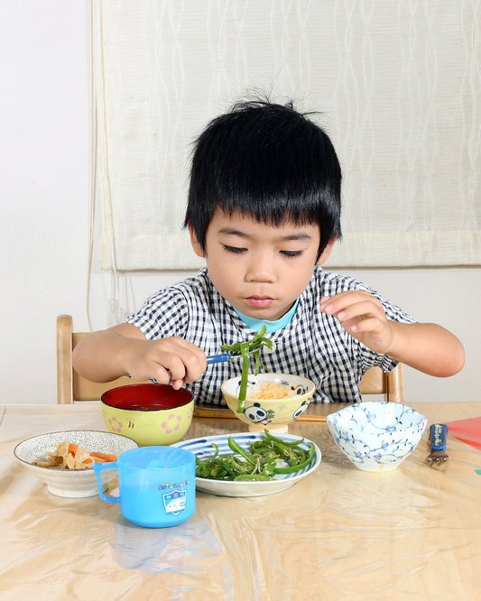
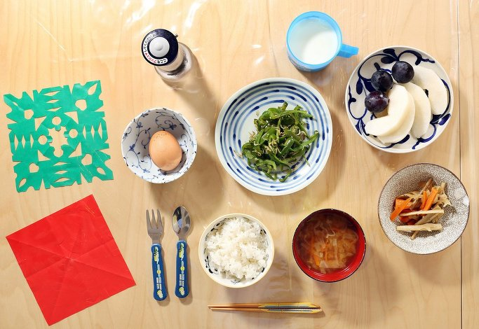
10. 터키 이스탄불, 오이쿠
4학년인 오이쿠의 아침식사의 중심은 갈색 빵이다. 여기에 그린/블랙 올리브와 누텔라 잼, 토마토, 삶은 달걀, 딸기잼과 꿀에 절인 버터, 여러가지 종류의 터키 치즈가 덧붙여진다.
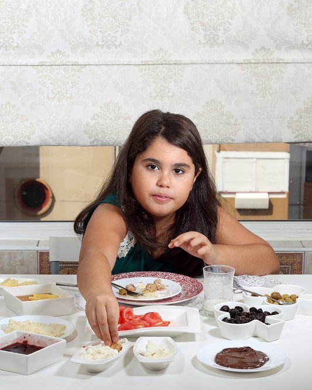
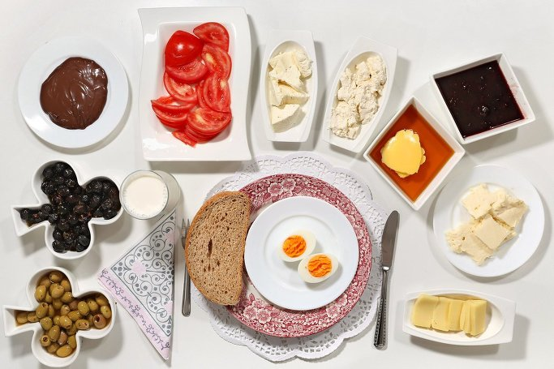
11. 브라질 상 파울루, 티아고
티아고는 초콜렛 우유를 좋아하고 또 일어나자마자 그걸 달라고 하지만, 그래도 이미 엄마가 직장에 나간 뒤이고 빨리 일어나 유치원에 가야하는 평일날 아침 7시에는 기분이 좋지 않다. 시리얼이 제일 좋아하는 아침식사인데, 여기에 바나나 케익과, 브라질 어린이들에게 인기가 좋은 달콤한 빵인 bisnaguinha를 requeijão라는 부드러운 크림 치즈와 함께 먹는다.
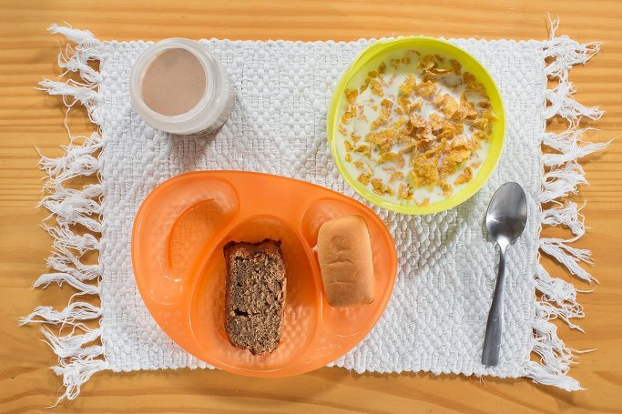